Riot Games est une entreprise américaine de développement et d'édition de jeux vidéo, fondée en 2006. Elle est principalement connue pour son jeu emblématique League of Legends, un des titres les plus populaires dans l'univers des jeux en ligne compétitifs. Riot Games se distingue par sa capacité à créer des expériences de jeu immersives, souvent axées sur la compétition et l'eSport. L'entreprise a élargi son portefeuille avec d'autres jeux à succès comme Valorant et Teamfight Tactics. Riot Games est aussi impliquée dans la production de contenus liés à ses jeux, notamment des séries et des événements en direct.

Les Fondateurs de Riot Games
Brandon Beck et Marc Merrill sont les cofondateurs de Riot Games. Amis de longue date, ils ont partagé une passion pour les jeux vidéo et ont imaginé une approche unique : développer des jeux multijoueurs compétitifs de haute qualité tout en adoptant un modèle économique "free-to-play", alors encore peu répandu.
Leur vision s’est concrétisée avec le lancement de League of Legends en 2009, qui est rapidement devenu l’un des jeux les plus populaires au monde, réunissant des millions de joueurs et spectateurs. Sous leur leadership, Riot Games a également joué un rôle majeur dans la montée en puissance de l’esport, organisant des compétitions internationales suivies par des millions de fans.
En 2017, Beck et Merrill ont décidé de se retirer des opérations quotidiennes pour se consacrer à des projets créatifs et au développement de nouveaux jeux, tout en restant profondément impliqués dans la vision à long terme de Riot Games.
Brandon Beck
Marc Merrill
Le rôle de Riot Games dans Arcane
Riot Games a joué un rôle central dans l'élaboration de la série Arcane, une adaptation animée de l'univers de League of Legends. En collaboration avec le studio d'animation français Fortiche Production, Riot Games a supervisé chaque étape du processus créatif pour garantir que la série respecte l'identité et la profondeur de son univers. L'objectif était de donner vie aux histoires et aux personnages emblématiques du jeu, tout en explorant des thèmes universels comme les luttes de pouvoir, les liens familiaux et les dilemmes moraux.
Riot Games a également apporté son expertise narrative en enrichissant les arcs des personnages et en développant les relations complexes entre eux, notamment celles de Jinx, Vi et Jayce. En investissant directement dans la production, plutôt que de licencier ses droits à un tiers, Riot a veillé à ce que Arcane soit fidèle à sa vision artistique et à son lore*, tout en offrant une expérience immersive et accessible, même pour ceux qui ne connaissent pas le jeu. Ce soin du détail a fait d'Arcane un succès critique et populaire, renforçant l'influence de Riot Games au-delà du domaine du jeu vidéo.
Lore* : désigne l'ensemble des histoires, des récits, des mythes et des éléments narratifs qui composent l'univers fictif d'une œuvre.